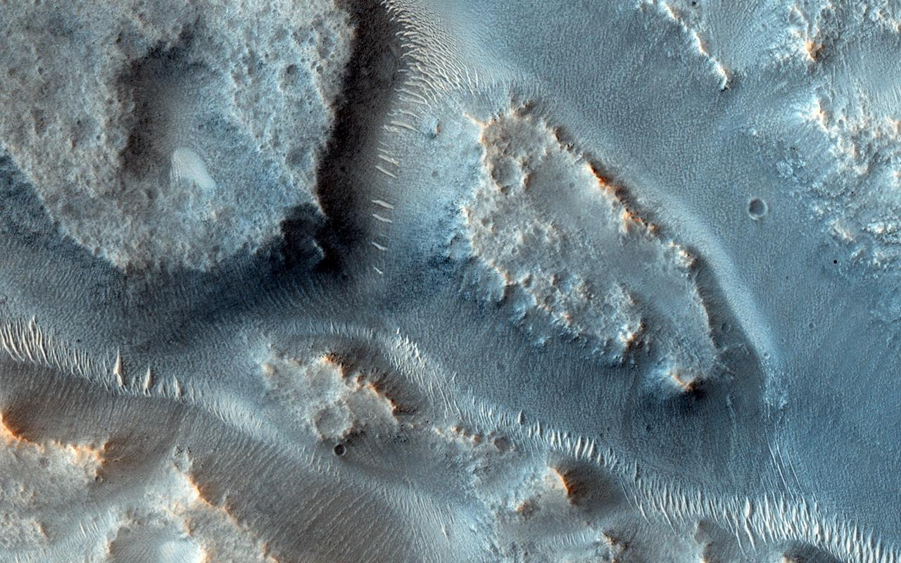

Lit-Gated Lesson Lab
Progressive access · AI context gating · NASA reference mission
Interactive course demo
Mission 001: Mars Water Evidence Explorer
A NASA-based reference demo for Lit-gated interactive learning content.
Step into a Mars investigation. Learners observe first, unlock clues later, and teachers/source reviewers receive deeper context only when their role permits it.
4content layers
4learner roles
AIcontext gated
Choose a role
Observation before answersHints unlock progressivelyTeacher notes protected

Evidence overlay
Student unlock reveals candidate channels, branch direction, and possible sediment deposit zones.
1 ObserveDescribe visible forms
2 CompareCheck alternatives
3 ConcludeState confidence
3D terrain model
Future module slot: swap this CSS/SVG cutaway for an interactive Three.js elevation model.
Investigation image: A Complex Valley Network Near Idaeus Fossae · NASA ID PIA17905 · NASA/JPL-Caltech/University of Arizona
Look for branching channels, fan-shaped deposits, and terrain relationships before opening clue layers.
Look for branching channels, fan-shaped deposits, and terrain relationships before opening clue layers.
Lesson layers
Student mission room
Unlocked content changes by role.
This polished lesson view is the deterministic course demo. The separate browser-wallet route proves wallet connection + Lit SDK initialization; live Lit encrypt/decrypt is currently blocked by external Lit node/relayer reachability from the local environment.